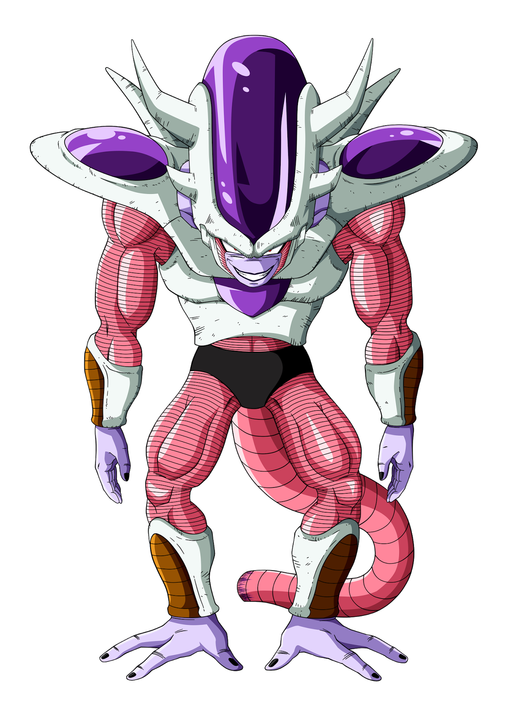
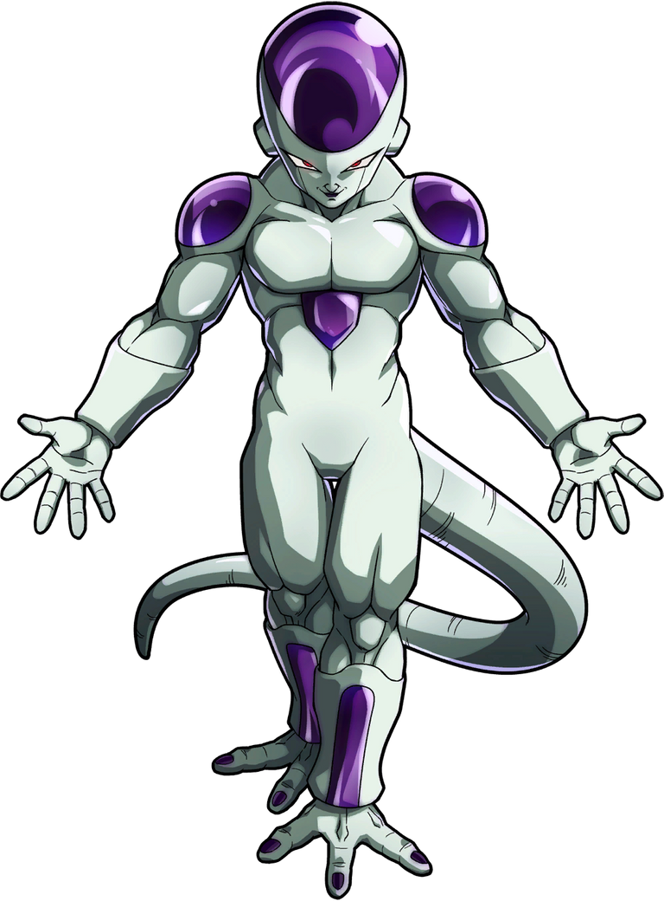
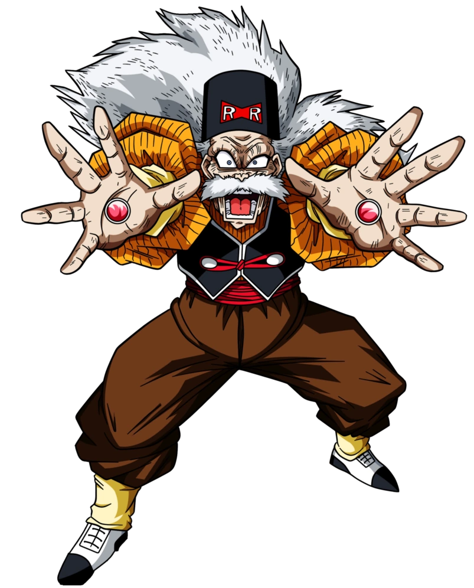

Freeza
Freeza (フリーザ Furīza?) é um personagem fictício da série de mangá Dragon Ball, criado por Akira Toriyama.
Ele fez sua estréia no Capítulo # 247: Namekusei, Frio e Nublado (An'un Uzumaku Namekkusei), publicado pela primeira vez na revista Weekly Shōnen Jump em 6 de novembro de 1989, como um temido tirano alienígena conhecido como "o ser mais poderoso do universo".
Apesar de não aparecer até a segunda metade do mangá, Freeza é amplamente considerado o antagonista mais icônico da série devido a servir efetivamente como o catalisador de muitos dos eventos descritos na história, como a chegada de Goku na Terra, os Saiyajins terem aterrissado na Terra e, posteriormente, os personagens principais irem para o planeta Namekusei. Ele também é diretamente responsável pelo assassinato de Bardock, pelo genocídio da raça Saiyajin e pela segunda morte de Kuririn, o que o torna o inimigo mais pessoal e significativo de Goku. A batalha entre Goku e Freeza se passou no planeta Namekusei, É o planeta natal de Kami-Sama, Piccolo Daimaoh, e Dende, e de todos os Namekuseijins. O planeta foi destruído pela fúria de Freeza, e onde tambem Goku despertou o Super Saiyajin.
Fase 1
Fase 2
Fase 3
Fase 4
Fase 5
Androides
A saga androides antecede a saga Cell, na verdade as sagas Cell e Androides são de certo modo relacionadas,A Saga Androides é a sétima saga na série Dragon Ball Z.
Na convenção para o lançamento do anime, o arco Androides/Cell foi quebrado em cinco sagas: a Saga Trunks, a Saga Androides, a Saga Cell Imperfeito, a Saga Cell Perfeito, e a Saga Jogos de Cell. Este artigo se refere especificamente aos eventos da segunda saga. Ela mostra Androides 16-19 e seu criador Dr. Gero (também conhecido como Androide 20) que causam destruição no mundo. Ela ocorre entre a Saga Trunks e a Saga Cell Imperfeito.O enredo da Saga Androides é ligado ao de Dragon Ball, a série de anime que antecedeu Dragon Ball Z: uma organização conhecida como a Força Red Ribbon tenta encontrar as Esferas do Dragão. O herói principal da série, Goku, ainda é uma criança em Dragon Ball e embarca numa jornada para encontrar as Esferas do Dragão sozinho.
Isso leva a um conflito entre a Força Red Ribbon e Goku. Como parte de seu plano de juntar as Esferas do Dragão, a Força Red Ribbon contrata Dr. Gero como seu principal cientista. Dr. Gero então constrói uma série de poderosos Androides. Embora, na versão de anime de Dragon Ball, Dr. Frapê é apresentado como o criador dos Androides, ele é depois revelado como sendo apenas o co-criador de Androide 8. Goku é eventualmente forçado a destruir a organização Red Ribbon para proteger as Esferas do Dragão, incitando Dr. Gero a buscar vingança contra ele.
Dr. Gero não é mencionado em Dragon Ball e Dragon Ball Z até a Saga Trunks, onde o personagem titular Trunks do Futuro avisa a Goku que Dr. Gero sobreviveu os ataques à Red Ribbon quando Goku era criança e criou um novo grupo de Androides para tentar destruir a Terra. Trunks também revela que Goku morrerá de uma doença no coração incurável antes de ter a chance de enfrentar os Androides.
Trunks então dá a Goku um remédio do futuro que curará sua doença até então fatal. Ele também menciona que Vegeta do Futuro e Bulma do Futuro são seus pais, o que choca Goku. Piccolo ouve a conversa entre Goku e Trunks com suas orelhas excepcionais. Após dar o aviso, Trunks volta para o futuro numa Máquina do Tempo e os Guerreiros Z começam três anos de treinamento para a batalha contra os Androides. Após a apariçao dos androides 20 e 19, começa toda uma batalha emocionante onde todos os guereiros Z estão envolvidos , assim que os androides 17 e 18 são ativados pelo Dr.Gero (Android 20), a batalha se intensifica pois os andoride 17 e18 sao extremamente poderosos, desse modo apenas os Saiyajins, se envolvem diretamente na batalha para detelos, mesmo assim seus poderes não são suficientes para tal proeza, aonde Guku e os demais efetuam um treinamento nas asala do templos de Kami-Sama, para aumentar seu poderes e tentar equilibrar a luta, alem dos androides citados temos tambem o numero 16 que se aprsenta neutro em algumas batalhas e apenas mostra seu potencial na batalha contra Cell.
Android 19
Android 20
Android 18
Android 17

Android 16

Cell
Cell (セル Seru?, lit. célula) é um personagem fictício da série em anime e mangá Dragon Ball Z, criado por Akira Toriyama, da qual é o vilão principal da terceira saga, conhecida como a Saga Cell ou Saga dos Androides.
Cell é um Bio-androide criado a partir das células de diversos lutadores como dos Guerreiros Z, Freeza e Rei Cold. Durante a sua participação na série, Cell evolui várias vezes, pois pretende se tornar um ser perfeito e para isso, passa a absorver a energia vital de vários humanos, em especial a dos Androides 17 e 18. Seu objetivo é se tornar o lutador mais forte da Terra, e para isso, ele precisa absorver os dois androides 17 e 18, para que seu organismo bio-genético se funda com os componentes dos androides o tornando um ser perfeito e poderoso, quando por fim le consegue absorver os androides 17 e 18, os guereiros enfrentam uma dificil batralha para dete-lo e destri-lo, Qundo em sua forma perfeita Cell organiza um torneio de artes marciais convocando Goku e os outros guerreiros Saiyajins para esse confronto. So que o grande vencedor e heroi que consegue derrotar Cell neste torneio não foi Goku, pois ele deu a vida e se sacrificou para mostrar para seu filho Gohan o ponto fraco de Cell, assim ajudando a derrota-lo.
Fase 1
Fase 2
Fase 3
Majin Boo
Majin Boo (魔人ブウ Majin Boo), também conhecido somente como Boo, é um personagem e antagonista final do mangá Dragon Ball e sua adaptação em anime Dragon Ball Z.
Ele é introduzido no capítulo # 460 Majin Boo, Aparece publicado pela primeira vez na revista Weekly Shōnen Jump em 14 de março de 1994. Majin Boo é um criatura mágica, membro da raça majin, criada pelo mago Bibidi para auxiliá-lo na dominação do universo. Conforme a série avança, Majin Boo expele sua maldade criando dois Majin Boo.
O bom se une aos Guerreiros Z enquanto o mau é destruído por Goku e renasce como um garoto chamado Oob.